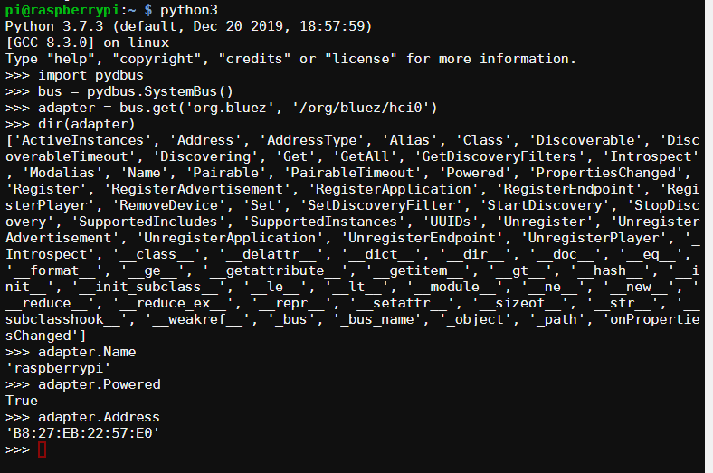
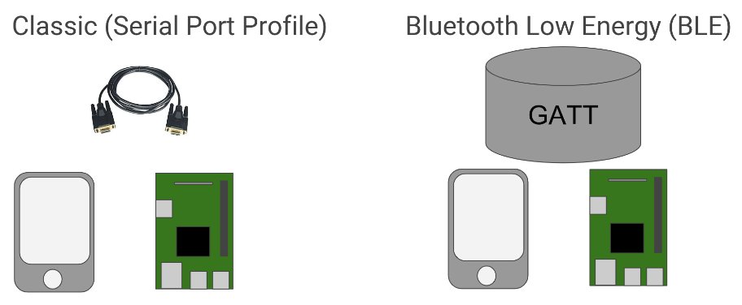

Using Python For Bluetooth¶
Back in 2015 I became aware of Bluetooth BLE Beacons and some of the things that could be done with them. At the same time I was helping on a STEM initiative called Go4SET where I would help students build out ideas of how to solve problems they had observed in the world around them. Their solution would show how electronics and software could be used to solve the problems. As Python was the language of choice in the schools I was working with, I started to investigate how to scan for BLE Beacons using a Raspberry Pi.
Here we are in 2020 and I still don’t have a great solution for how to do this, but things have got better in that time and I’ve learnt some things along the way. One of the keys things I’ve learnt is that there is a lot of out-of-date information on the internet about Bluetooth. While I suspect my writings will (in time) add to the volume of out-of-date information on the internet about Bluetooth. For now I am aiming for it to be of some help to someone coming to the topic a new.
So here is some Python-Linux-Bluetooth information that might help someone starting.
Bad Information¶
Many tutorials on the internet are done with command-line tools that have been deprecated, such as hcitool and hcidump. If you see tutorials using the HCI (Host Controller Interface) socket then it is either out-of-date or at such a low level that it is best to stay away.
The command-line tools recommended by the BlueZ developers are bluetoothctl or, if you need more control, btmgmt. And instead of using hcidump, use btmon.
I would also be very nervous about using a library that uses HCI sockets for interfacing with the Bluetooth hardware on Linux. More on the different programming interfaces later.
But BlueZ…Really?¶
During the years I’ve been playing around with Bluetooth on Linux I’ve seen people show their frustration with the way that BlueZ handles things.
And I see peoples point. An example is that the HCI tools were deprecated and removed. It is hard to find tutorials on how to use the new tools and answers to questions on the mailing list expect a certain level of knowledge. It is also common for questions to go unanswered on the mailing list. This is Open Source so they don’t owe anyone an answer. However, I have also seen the developers show their frustration that people go off and do crazy things rather than how they had intended things to work.
I spent many years of my professional life as an Application Engineer for a software company. My big learning from that time is that if you don’t show people how to use your tool (and make using it the way you wanted the easiest) then smart people will workout their own way of doing it.
Having said all of that, the developers have settled on the DBus API and it is getting better and better. The biggest barrier for most people is finding the “on-ramp” to learning about how to use it.
There are examples Python examples in the repository, but frankly they are often of limited value.
BlueZ API¶
A list of the possible API’s starting from lowest level and going to the highest. For most people, the higher the better.
HCI Socket¶
As I said earlier, this bypasses the bluetoothd that is running on the Linux system that is used by the desktop tools. Using this is not a great idea unless you really, really know what you are doing.
All the information is available in the Bluetooth Core Specification which runs to about 3,256 pages for the 5.2 version of the spec.
MGMT Socket¶
The BlueZ Bluetooth Mamagement API is the next step up and the lowest level that the BlueZ developer recommend.
The problem for Python users is this bug makes it difficult to access the mgmt socket. There are other duplicate bugs on this in the system. Until they are fixed, this remains off bounds for many Python users.
DBus API¶
This should be the go to level for most people wanting to interact with the BlueZ API’s. However, it seems the number of people that have done things with DBus previously is a relatively small group and it is another level of indirection to learn.
There are a number of Python libraries that offer DBus bindings for Python. However, there isn’t just one library that is correct for all cases. pydbus is one of the easier ones to get started with.
The BlueZ DBus API for interacting with the Bluetooth Adapter on your Raspberry Pi is documented at https://git.kernel.org/pub/scm/bluetooth/bluez.git/tree/doc/adapter-api.txt
This allows you to know that the DBus Service is (org.bluez). The Object Path is less obvious from the documentation but is /org/bluez/hci0 by default on most Linux machines. With this information we can quickly look to see properties from the adapter using Python. The example below looks at name, if it is powered, and its mac adderess:
Python For Bluetooth¶
If you write applications on iOS or Android, then you will have seen there are some great libraries with API’s that hide much of the gnarly-ness of Bluetooth. With Python there are not those libraries around with that level of abstraction for most things you might want to do. So you might end up going a little deeper and needing to know some of the details of Bluetooth.
Libraries to help you Bluetooth¶
There are plenty of them out there. I keep a list of many of them at: https://github.com/ukBaz/python-bluezero/wiki
Most of them are pretty niche in what they do. There are a number of them that are abondonware. This isn’t surprising given how big Bluetooth is and the many things you can do with it.
It is also really hard to automate the testing of Python Bluetooth libraries and I think this is what ends up being the main reason why the libraries stay niche or abandoned.
More than one Bluetooth¶
Depending on where you are starting from there can be a number of details that can trip people up when they first engage with Bluetooth and code.
The first is that there are two different types of Bluetooth. These are generally referred to as Classic and BLE. Devices like the Raspberry Pi support both. While the BBC micro:bit is BLE only. If you try to use Classic (aka BR/EDR, aka rfcomm, aka Serial port profile, aka spp, aka 1101, aka 00001101-0000-1000-8000-00805f9b34fb) on the Raspberry Pi then it will never speak sensibly with a micro:bit.
Bluetooth Classic (BR/EDR) supports speeds up to about 24Mbps. It was version 4.0 of the standard that introduced a low energy mode, Bluetooth Low Energy (BLE or LE, also known as “Bluetooth Smart”), that operates at 1Mbps. This mode allows devices to leave their transmitters off most of the time. As a result it is “Low Energy”.
These two modes have a different philosophy of how they behave. Classic is a cable replacement. It makes the connection and stays connected. BLE is similar to a database where the transmitter is only on when it is being written to or read from. Clients can also subscribe to notifications when data changes in the Generic ATTribute Profile (GATT).
In classic mode there is a server and a client. The server advertises and the client connects.
With BLE there are different terms of peripheral and central. A peripheral advertises and a central scans and connects.
In BLE you can also have a Broadcaster (beacon) which is a transmitter only (connectionless) application. The Observer (scanner) role is for receiver only connectionless applications.
Endianness¶
As with most communication protocols, data is chopped up in to bytes that are sent between the two devices. When this is done there is a choice of what order those bytes are transmitted in. This is referred to as endianness
The Bluetooth standard is little-endian which often trips people up that are looking at Bluetooth for the first time.
The exception to this is when looking at beacons. As far as I can tell this seems to be because Apple did this when they brought out the iBeacon and many have followed that example.
Binary¶
Because Bluetooth has come out of the embedded world there are lots of binary numbers referring to things rather than nice string names. Lots of values are 128-bits in length.
This means that when I want to look at the status of button A on a micro:bit I need to look in the GATT database for E95DDA90-251D-470A-A062-FA1922DFA9A8
In classic mode, the Serial Port Profile (SPP) is normally referred to by the 16-bit hex value of 0x1101. However, it is really an 128-bit value but because it is an official profile it can be shortened to a 16-bit value
Bluetooth Special Interest Group (SIG) Reserved Values¶
The SIG has the following number reserved and the xxxx below is replaced with the 16-bit value. 0000xxxx-0000-1000-8000-00805f9b34fb
If you see a tutorial that is using 16-bit values without using official SIG profiles then be suspicious if that is a good tutorial.
Asynchronous¶
There are parts of Bluetooth that just needs to be asynchronous. Examples are when scanning for new devices or getting notifications from a peripheral. While this is possible to do with Python, asynchronous isn’t the way most people learn Python.
For BlueZ, it works with the GLib event loop which will be familiar to people that have coded GUI’s in Python.
Pairing and Connecting¶
I have seen confusion between these two terms when people come to programming Bluetooth.
Pairing is about the two devices exchanging information so that the devices can communicate securely. So pairing is a one-off activity to exchange credentials. It is not always required as sometimes it is OK for devices to exchange information without being secure. Especially if you are just learning as it simplifies the processes involved.
Connection needs to be done every time you want the devices to start communicating. It is a straight forward step in the two devices already know about each other.
I typically recommend that the one-off setup of scanning and pairing is done manually with bluetoothctl.
RFCOMM (Or is that SPP?)¶
This is the most useful profile in classic mode for many activities in the maker community when you want ot exchange information between two boards that support Bluetooth serial connection. From Python 3.3 this is supported within the standard socket library. Below is an example of a client connecting to a server. This assumes the pairing has already happened and will do the connection.
>>> import socket
>>> s = socket.socket(socket.AF_BLUETOOTH, socket.SOCK_STREAM, socket.BTPROTO_RFCOMM)
>>> s.connect(('B8:27:EB:22:57:E0', 1))
>>> s.send(b'Hello')
>>> s.recv(1024)
b'world'
>>> s.close()
If this just works then life is great. If there are issues, then this is when Bluetooth can become more frustating. Debugging is probably a separate post.
BLE (Or is that GATT)¶
With BLE there is not the same level of support from native Python so it is required to use the DBus API. This means using the Device and GATT.
The difficult piece with these is that it is not known ahead of connection what the DBus Object Path will be for the devices, GATT Services, and GATT Characteristics we are interested in.
This results in the need to do a reverse look-up from the UUID to the object path. This was the subject of a kata I held at my local Python user group.
Good To Know¶
This talk at Embedded Linux Conference gave lots of good insight in to how things are done with BlueZ. It is worth a watch if you are interested in learning more.
Python, Bluetooth, and Windows…¶
In Python 3.9 it is going to be easier to use Bluetooth RFCOMM (Serial Port Profile) thanks to this submission: https://bugs.python.org/issue36590